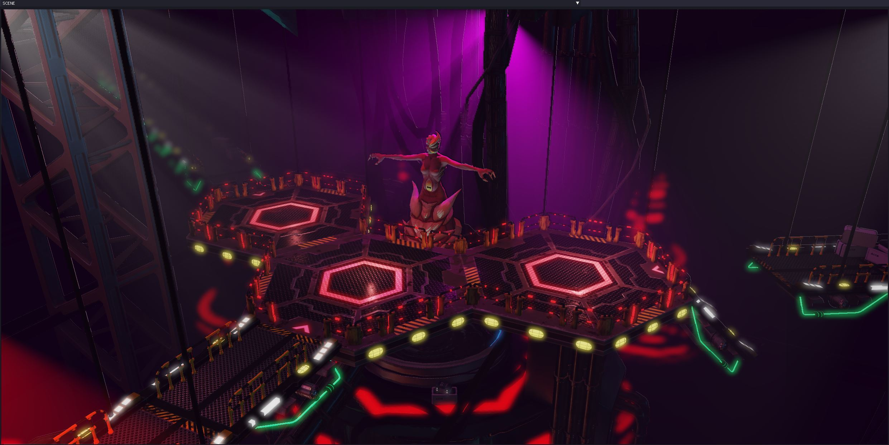
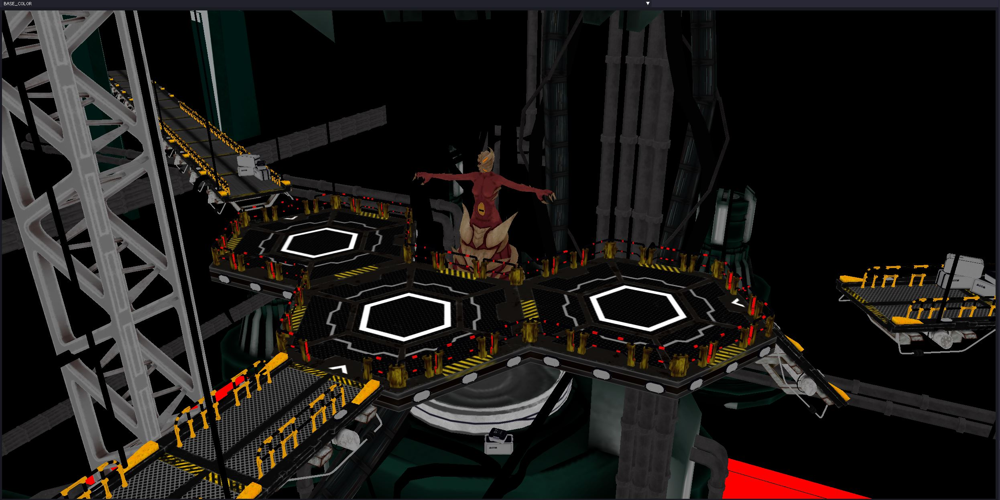
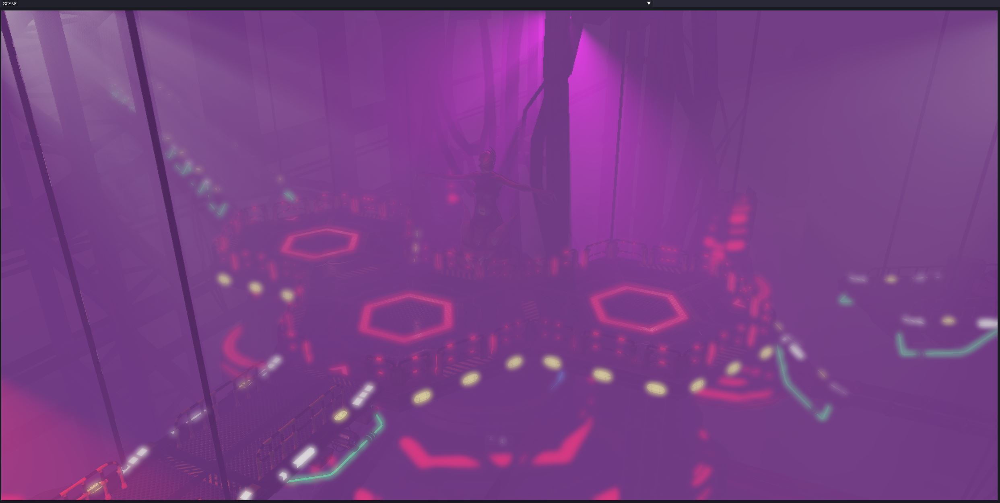
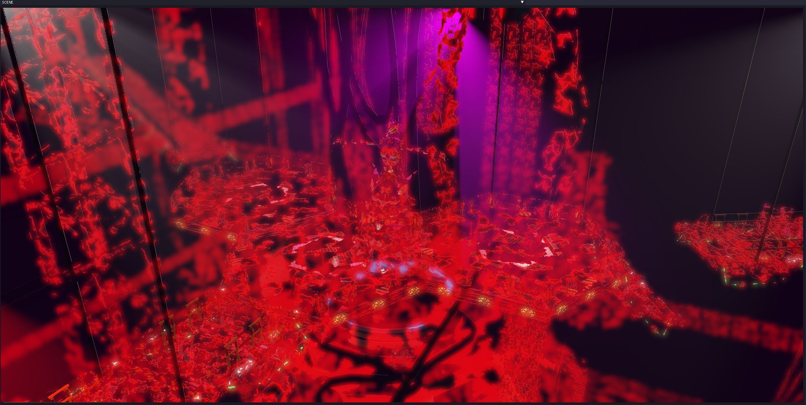

Chrysalis
Here is my contribution on the chrysalis project
Final boss scene

Deferred renderer

Volumetric Lighting
Bloom
Bloom
Blur
Screen space ambient occlusion (SSAO)
SSAO
Filmic tone mapping
ACES tone mapping
Height fog

IBL indirect lighting
IBL indirect light
Dissolve vfx
